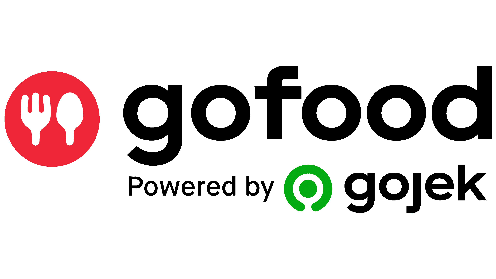
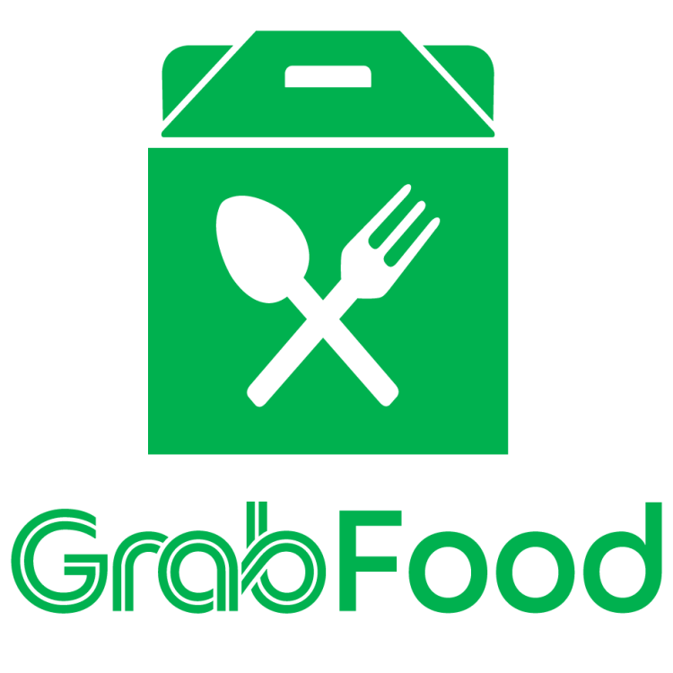
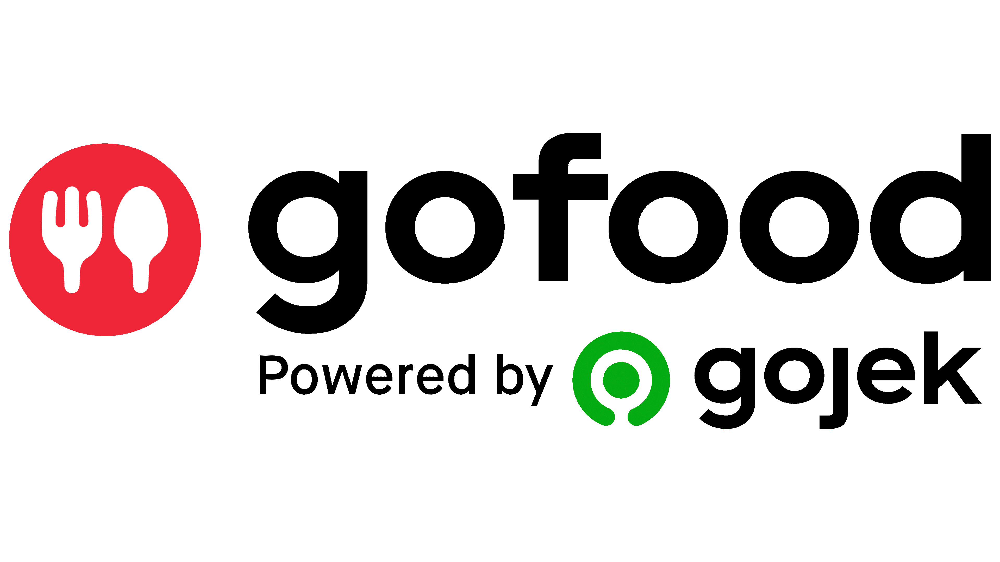
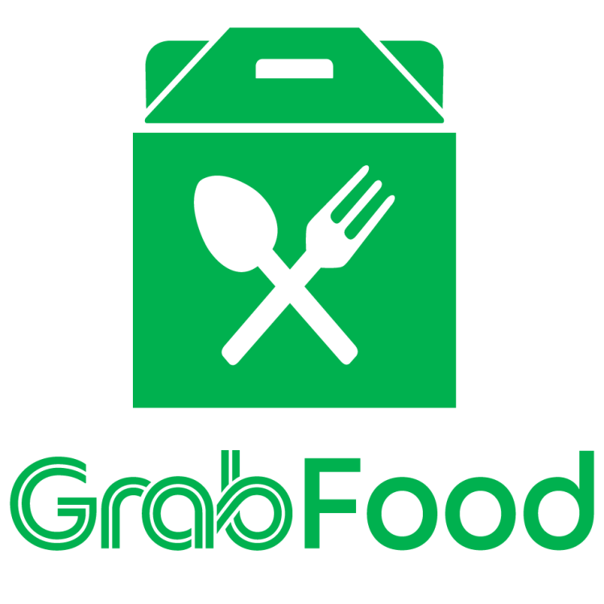

Gen Z adalah "generasi yang lahir antara tahun 1997 hingga 2012, yang memiliki karakteristik seperti independen, kreatif, dan memiliki orientasi pada teknologi." (Schawbel, 2019). Menurut definisi tersebut, maka sangat cocok jika Gen-Z dijadikan sebagai tokoh yang mampu menjalankan kontribusi pemanfaatan teknologi dalam kegiatan pemasaran di era digital sekaligus sebagai target pasar.
Perubahan pola pikir konsumen terhadap cara pembelian kebutuhan hidupnya kini sangat dipengaruhi oleh sistem digitalisasi, dimana perubahan minat dan selera konsumen yang terus berjalan akibat dari tren yang sedang terjadi saat ini. Media sosial adalah salah satu penyebab yang dapat mempengaruhi pengambilan keputusan konsumen untuk membeli sebuah produk, termasuk produk makanan.
Pengertian UMKM (Usaha Mikro, Kecil, dan Menengah) adalah usaha ekonomi produktif yang dimiliki oleh orang perorangan dan/atau badan usaha perorangan yang memenuhi kriteria Usaha Mikro sebagaimana diatur dalam Undang-Undang. Ada banyak pelaku Usaha Mikro Kecil Dan Menengah (UMKM) yang juga menjajakan dimsum, belum lagi kafe atau restoran-restoran ternama yang juga mencari penghasilan dari kuliner dimsum (Tribunjabar.ID, Bandung 2024).
Benchmark pertama yaitu Kaybun Dimsum, yang merupakan salah satu UMKM yang bergerak di bidang kuliner khususnya dimsum berbahan dasar udang dan ayam yang berdiri sejak Maret 2018. Kaybun Dimsum berpusat di Jl. Pangauban Tipar 20, Katapang (kaybun.id). Kaybun Dimsum melakukan penjualan dengan sistem online dan offline, akan tetapi kegiatan pemasaran digital yang dilakukan belum tercapai maksimal dalam memberikan keuntungan, sehingga saat itu Kaybun Dimsum mulai menerapkan sistem pemasaran digital secara efektif melalui media sosial yaitu Instagram. Akan tetapi dalam penerapan sistem digital melalui Instagram tersebut tidaklah cukup berjalan secara efektif, sehingga mendorong Kaybun Dimsum menekankan sistem pemasaran dengan keduanya itu dapat berjalan. Permasalahan yang terjadi tersebut karena Kaybun Dimsum tidak adanya perencanaan khusus dengan teori marketing mix 4P menurut Kotler yaitu:
- Product
- Price
- Place
- Promotion
Namun saat ini Kaybun Dimsum telah mampu menerapkan sistem pemasaran offline dengan membuka franchise secara terbuka untuk umum, sedangkan dalam sistem digital atau online Kaybun menerapkan penjualan melalui platform seperti ShopeeFood, GoFood, GrabFood, dan lainnya. Selain itu, Kaybun juga menggunakan media sosial terutama Instagram agar lebih efektif dalam menyampaikan produk, harga, tempat, ataupun promosi yang dilakukan sebagai pemenuhan perencanaan teori 4P. Mengacu pada sistem produksi, Circlefood menjadikan Dimsum Huisaeng sebagai benchmark pada bidang yang sama. Huisaeng Dimsum berusaha dalam sektor ritel, khususnya dalam penjualan berbagai macam aneka dimsum. Variasi dimsum yang dijual menjadi inspirasi untuk menciptakan produk baru yang ada pada Circlefood. Sistem penjualan pada Huisaeng Dimsum yaitu melalui makanan beku (frozen) yang memiliki daya simpan lama, sehingga penjualan yang dilakoni yaitu secara online atau melalui reseller. Menurut Michael E. Porter, seorang "Strategy Guru", persaingan bisnis dapat dianalisis menggunakan lima kekuatan, yaitu:
 



- Ancaman pendatang baru
- Kekuatan tawar-menawar pembeli
- Kekuatan tawar-menawar pemasok
- Ancaman produk pengganti
- Persaingan di antara pesaing yang ada
Maka dari itu tercipta ide untuk menciptakan sebuah produk dengan karakteristik khusus dari dimsum pada umumnya. Karakteristik tersebut merupakan sebuah inovasi dengan menciptakan produk baru yaitu Dimsum Tulang Rawan (DIRAWAN). Tulang rawan ini merupakan tulang rawan muda yang berasal dari sapi, yang dikombinasikan sebagai bahan pembuatan dimsum sehingga menghasilkan rasa yang unik dan gurih. Circlefood menjalankan strategi pemasaran dengan memanfaatkan era digitalisasi sebagai marketing berbasis teknologi yang lebih fokus dan cocok dengan tren pada Gen-Z. Strategi yang diimplementasikan yaitu melalui Instagram dan TikTok sebagai media konten dalam membangun brand awareness, yang kemudian dititikberatkan pada WhatsApp Business sebagai media keberlanjutan dalam membangun komunikasi jangka panjang dengan pelanggan. Efektivitas keberlanjutan tersebut dimaksimalkan dengan beberapa pemanfaatan, yaitu:
- Menyimpan database pelanggan
- Pelayanan yang cepat dan personal
- Automasi pesan
- Strategi green marketing yang ingin dicapai sesuai segmentasi dan target pasar yang dituju.